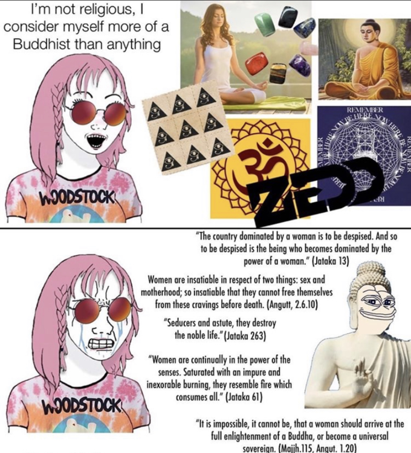

Anti Feminism in Buddhism
Credit to Daniel Haqiqatjou
Disclaimer:
This note is for those Atheists, Agnostics, and Secularists who think that Buddhism is the most peaceful, progressive, liberal ideology ever when in reality it’s not. This note is also for Buddhists who criticize Islam from a feminist angle
——
Diana Paul, herself a Buddhist scholar, wrote a book, Women in Buddhism, which she begins as such, p.3:
“Traditional Buddhist attitudes toward woman as inferior reflect a view of woman as temptress or evil incarnate. The lustful woman is seen with unrestrained sensuality, perhaps irrevocably so. She has an animalistic nature associated with innate sexual drives not found in the nature of the male. Buddhist literature implies that woman is biologically determined to be sexually uncontrollable. By despising her own nature, woman can perhaps deny her biological destiny of depravity.”
She then goes on to quote traditional sacred texts from Buddhism.
In “The Tale of King Udayana of Vatsa” from the Mahāratnakūṭa Sūtra, an influential collection of canonical texts that she quotes in pp. 41-42:
“Just as a fire in a deep pit Can cause fire damage without smoking. A woman also can be Cruel without pity.
As the filth and decay Of a dead dog or dead snake Are burned away, So all men should burn filth And detest evil.
The dead snake and dog Are detestable, But women are even more Detestable than they are.”
Women will appreciate the poetry! Especially the parts about being more detestable than dogs and dead snakes.
Let’s also bring the Andabhuta Jātaka.
Jatakas are basically a set of fictional literature about the “previous births” of the historical Buddha.
Andabhuta Jātaka is the number 62 of such fairy-tales.
We read:
“A sex composed of wickedness and guile, Unknowable; uncertain as the path Of fishes in the water,—womankind Hold truth for falsehood, falsehood for the truth! As greedily as cows seek pastures new, Women, unsated, yearn for mate on mate. As sand unstable, cruel as the snake, Women know all things; naught from them is hid!”
What’s up with Buddha — in all his “incarnations” — comparing women with snakes?! We could multiply these “verses” denigrating women as being the very embodiment of evil.
But how did the followers themselves interpret such texts? Let’s take Shinran, a 12th century Japanese monk. He’s the founder of the “True Pure Land Buddhism” branch of the “Pure Land Buddhism” school. To not get too technical, just think of it as the most followed Buddhist sub-sect in Japan, Japan itself having the third highest numbers of Buddhists (after China and Thailand), and, in the West at least, Buddhism is often seen through the Japanese experience.
So, what did one of the most influential Japanese-Buddhist monks think of women?
We read in The Essential Shinran: A Buddhist Path of True Entrusting, p. 186:
“So profound is Amida’s great compassion That, manifesting inconceivable Buddha-wisdom, The Buddha established the Vow of transformation into men, Thereby vowing to enable women to attain Buddhahood.”
So women can reach “Buddha-hood” (their notion of “enlightenment”) by… becoming men.
Imagine if the Qur’an said that women can only reach Paradise by becoming men.
I hope Western liberals will make it their mission to liberate these oppressed Buddhist women!
And perhaps feminists will now accept the Talibans’ destruction of the Buddhas of Bamiyan in Afghanistan? After all, he was such a vile misogynist!
According to the Buddhist tradition, women cannot ascend to the status of a Buddha — one who is awake, enlightened and emancipated from samsāra, the cycle of birth and death — because their bodies grow and give birth to children. That ties them metaphorically to samsāra.
Ancient text
A passage from a popular 5th-century Buddhist text provides an extensive meditation on the reasons why a woman must transform her sex in order to become a Buddha:
“As for a woman who is born inside the imperial palace, she necessarily belongs to another person. Throughout her life, she is like a maidservant who must serve and follow a great family, also like a disciple who must venerate and serve his master. She is beaten by different kinds of swords and staves, rocks and tiles, and is defiled by every evil word. These kind [sic] of sufferings deprive her of self-sovereignty. This is why a woman must give rise to the thought of abhorring and getting rid of her female body.”
To attain Buddha status — the ultimate goal of the religion — a woman must become a man, by dying and being reborn. But in many Buddhist texts, an advanced practitioner of Buddhism might miraculously change her form, in this life, at her own will.
“It is better for you to have put your manhood in the mouth of a venomous snake or a pit of burning charcoal than a woman.”
“Of all the scents that can enslave, none is more lethal than that of a woman.”

https://news.usc.edu/120048/ancient-buddhist-texts-reveal-shifting-perspectives-on-women/
https://www.scirp.org/journal/paperinformation.aspx?paperid=75673
Further examples of negative portrayals of women in Buddhism are evident in both Mahayana and Theravada literature. In both traditions hell is described as populated by elderly, repulsive women, a visualization monks are encouraged to undertake to deepen their understanding the impermanence of the body and beauty. Other negative portrayals of women include the following: “Pray, lord, what is the reason, what is the cause why women folk neither sit in a court [of justice], nor embark on business, nor reach the essence of [any] deed?” The Buddha replied “Women are uncontrolled Ananda. Womenfolk are envious, Ananda. Women folk are greedy, Ananda. Women folk are weak in wisdom, Ananda. That is the reason, that is the cause why women folk do not sit in a court of justice, do not embark on business, do not reach the essence of the deed” (Anguttara Nikaya II: 82-83).
—-
Fools, lust for women like dogs in heat. They do not know abstinence. They are also like flies who see vomited food. Like a herd of hogs, they greedily seek manure. Women can ruin the precepts of purity. They can also ignore honor and virtue. Causing one to go to hell, they prevent rebirth in heaven. Why should the wise delight in them? (Sponberg, 1992: 19)
——
According to the Pali Vinaya and other early scriptures, the Buddha originally refused to ordain women as nuns. He said that allowing women into the sangha would cause his teachings to survive only half as long –- 500 years instead of a 1,000.
Traditional Buddhist attitudes toward women associate the feminine with the sensual realm as opposed to the Dharma realm. Women are either depicted as lustful temptresses who threaten the spiritual welfare of monks or as the maternal source of man’s anguish and pain. One level of hell described in both Theravadin and Mahayana literatures depicts a realm which is populated by elderly, grotesquely formed women. This association of the temptress/seductress with the death of the spiritual being is also depicted by the daughters of Mara: Lust, Aversion, and Craving.
A few passages from "The Tale of King Udayana of Valsa" from the Collection of Jewels illustrates the mon’s insecurities about women and their beliefs that women are the causes of evil and suffering.
"Women can be
The cause of great suffering.
If desire is destroyed
There will be everlasting happiness."
"The dead snake and dog
Are detestable,
But women are even more
Detestable than they are."
The following quote is attributed to the Buddha.
"The female’s defects- greed, hate, and delusion and other defilements- are greater than the male’s...You (women) should have such an intention... Because I wish to be freed from the impurities of the woman’s body, I will acquire the beautiful and fresh body of a man."
https://www.webpages.uidaho.edu/ngier/307/women307.htm
https://journals.sagepub.com/doi/abs/10.1177/0966735012464149